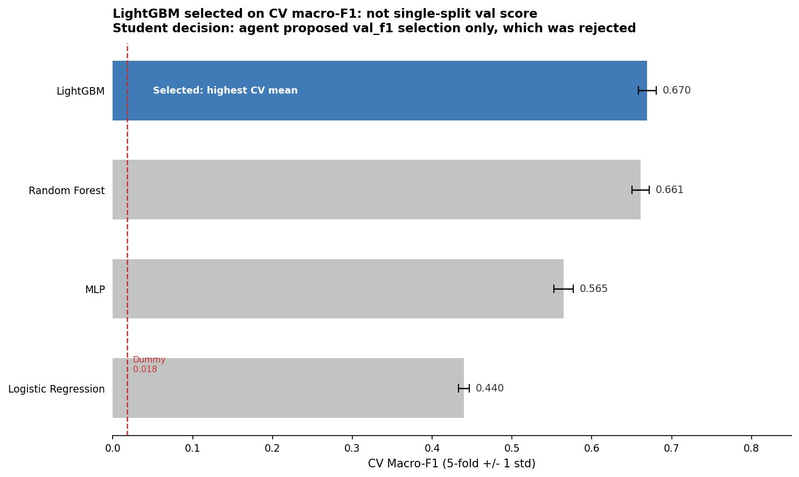
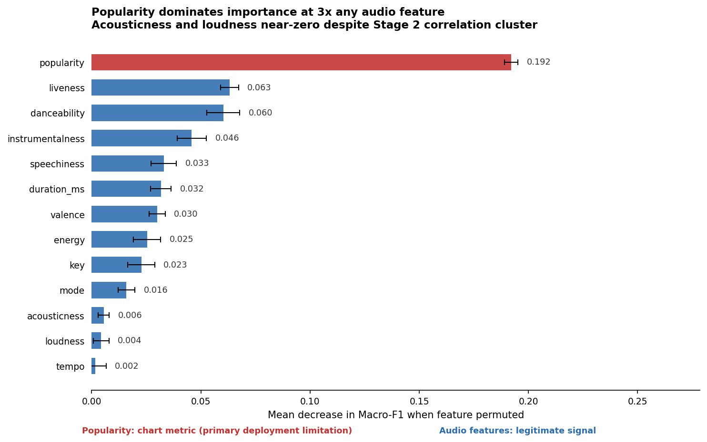
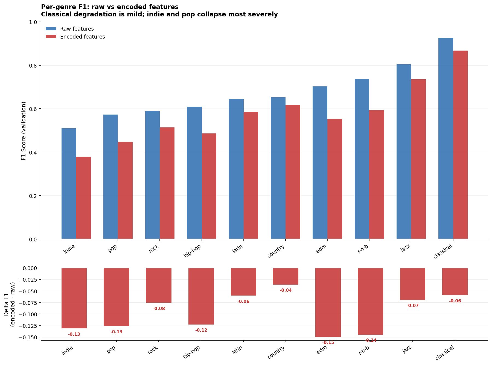
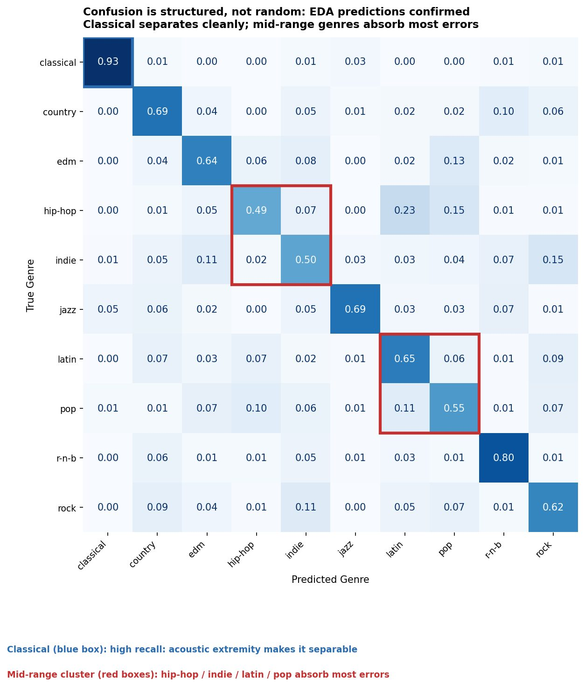

Can genre be predicted from audio alone?
When more structure means less signal: gradient boosting on 13 Spotify audio features, and an autoencoder hypothesis that was tested and rejected with a mechanistic explanation.
Problem
A label tags a track with a genre before it decides which playlists to pitch and which chart it competes in. If genre is audible, a model on 13 Spotify audio features should recover it. If it is a positioning choice, the audio will not tell you.
The central hypothesis was that a learned autoencoder representation would beat raw audio features. Three predictions were registered before modelling; all three held.
Skills
- Evaluation design: 70/15/15 stratified split, test set accessed once, scaler fitted on train only
- Model selection: 5-fold CV on macro-F1 across dummy, LogReg, Random Forest, MLP and LightGBM; paired t-test (t = 3.657, p = 0.022)
- Tuning: GridSearchCV over learning rate, num_leaves and n_estimators
- Representation learning: PyTorch undercomplete autoencoder, bottleneck sweep over {4, 6, 8, 10}
- Interpretation: permutation importance, PCA of the latent space, calibration curves, confusion matrix
- Agent governance: three agent errors caught by human review, none visible to automated testing
Results
Figures
MSE reconstruction learns a maximum-variance projection, not a maximum-discriminability one: PC1 captures 78.08 per cent of latent variance against 28.2 per cent for raw features.




What a label would do with this
Pop, indie and hip-hop are almost indistinguishable on audio features, so for those three the pitch decides the lane, not the sound. Classify by audio where it holds (classical at 0.930 F1); choose the playlist lane for mid-range tracks by audience and positioning. Do not lean on popularity for unreleased catalogue with no streaming history.